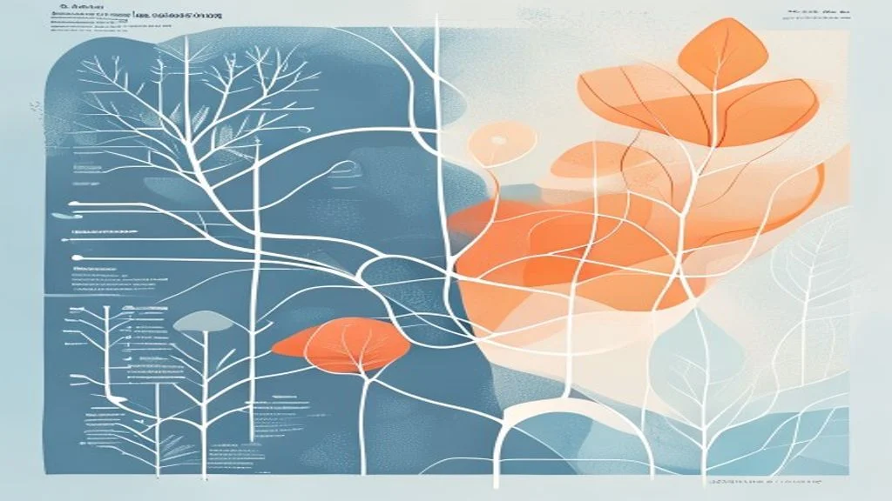

【専門家が解説】なぜ眠れない？自律神経の乱れと不眠のメカニズム＆明日からできる3つの東洋医学セルフケア
2026.06.16

「寝たいのに眠れない」つらい夜を過ごしていませんか？
「疲れているはずなのに、布団に入ると目が冴えてしまう」「夜中に何度も目が覚めて、朝起きた瞬間からすでに体が鉛のように重い…」。そんなつらい夜を過ごしていませんか？「しっかり休みたい」と願うほど焦りが募り、時計の針が進む音だけが響くベッドの中。その不調は、あなたの意志の弱さや一時的な疲れではなく、自律神経のスイッチが切り替わらなくなっているサインかもしれません。東洋医学の視点からも、これは心身のバランスが崩れ「気（エネルギー）」が滞っている状態を示しています。今回は、なぜ自律神経が乱れると眠れなくなるのか、そのメカニズムと、今日から始められる具体的な解決策を専門家の視点から徹底解説します。
自律神経の乱れと不眠を引き起こす、体と心のメカニズム
私たちは日中、活動を支える「交感神経」が優位になり、夜は休息を促す「副交感神経」が優位になることで、自然な眠りへと導かれます。しかし、日々のストレスや過緊張が続くと、夜になっても交感神経の興奮が収まりません。交感神経が過剰に働くと、血管が収縮して末梢（手足の先）の血流が滞り、深部体温（体の中心の温度）が下がりにくくなります。人間の体は、手足から熱を放散して深部体温を下げることで眠気を催す仕組みになっているため、冷えや血行不良は不眠の致命的な原因となるのです。

さらに東洋医学の視点では、この状態を「気（き）」「血（けつ）」「水（すい）」の巡りの乱れ、特に「気逆（きぎゃく）」や「心腎不交（しんじんふこう）」と捉えます。ストレスにより気の巡りが滞ると、本来は下に降りるべきエネルギー（気）が頭部に突き上げ（気逆）、脳がオーバーヒート状態になります。また、体を温めるエネルギーと冷ます水分のバランスが崩れることで、心（脳・精神）が高ぶり、睡眠を司る「腎」が十分に機能しなくなります。この「熱が上部にこもり、足元が冷える（上熱下寒：じょうねつげかん）」という状態こそが、頭が冴えて眠れない夜の正体なのです。
明日から無料でできる、自律神経を整える養生法3選
自律神経のスイッチをスムーズに切り替えるために、自宅で簡単にできる3つのアプローチをご紹介します。
1. 足元の冷えを解消し「気」を下ろす「失眠（しつみん）」の刺激
【手順】足の裏、かかとの中央にある「失眠」というツボを刺激します。お風呂上がりに、親指の腹を使って、やや強めに「5秒押して、5秒離す」を5回繰り返してください。また、使い捨てカイロを靴下の上からかかとに当てるのも効果的です。
【根拠】東洋医学において、かかとは「腎」の経絡と深く関わっており、失眠を温めることで頭にのぼった過剰な「気（熱）」を足元へと引き下げることができます。これにより自律神経が副交感神経優位へと切り替わり、深部体温の低下を促して自然な入眠へと導きます。
2. 交感神経の緊張を解く「耳引っ張りマッサージ」
【手順】両耳の真ん中あたりを親指と人差し指で軽くつまみ、真横に向かってじんわりと5秒間引っ張ります。次に、斜め上、斜め下へも同様に5秒ずつ引っ張ります。最後に、耳全体を大きく後ろに回すようにゆっくりと5回円を描きます。これを就寝前の布団の中で3セット行います。
【根拠】耳の周囲には多くの自律神経の線維が密集しており、特に耳の軟骨や側頭部の筋膜を優しく緩めることで、迷走神経（副交感神経の代表格）が刺激されます。これにより脳の興奮が鎮まり、血管が拡張して呼吸が自然と深くなるため、緊張した身体を「休息モード」へと切り替えることができます。

3. 脳の興奮を鎮静化する「4-7-8呼吸法」と「労宮（ろうきゅう）」のツボ押し
【手順】まず、手のひらの中央、手を握ったときに中指と薬指の先が当たるところにある「労宮」というツボを、反対側の親指で3秒かけて押し、3秒かけて離すのを3回行います。その後、目を閉じて「4秒かけて鼻から吸い、7秒間息を止め、8秒かけて口からゆっくり吐き出す」呼吸を4サイクル繰り返します。
【根拠】「労宮」は心包経という経絡に属し、自律神経や精神の緊張を和らげる「心の門」です。ここを刺激しながら、息を吐く時間を吸う時間の2倍にする「4-7-8呼吸法」を行うことで、二酸化炭素濃度が一時的に調整され、脳の扁桃体の興奮が抑制されます。これにより心拍数が低下し、深いリラックス状態が作り出されます。
実践のヒント
夜中に目が覚めてしまったときは、「眠らなきゃ」と焦るほど交感神経が優位になります。そんな時は思い切って一度ベッドから出て、薄暗い部屋で「耳引っ張り」をしたり、ぬるい白湯を一口飲んで「失眠」をさすってみてください。暗闇の中で体を動かさず焦るよりも、軽い刺激で気を下げる方が、格段に再入眠がスムーズになります。
まとめ：がんばる自分を緩めて、心地よい眠りへ
不眠は「もっと自分を労って」という、身体からの切実なサインです。今回ご紹介した「失眠の刺激」「耳マッサージ」「4-7-8呼吸法」は、道具も使わず、今夜からすぐに試せる強力な養生法です。自律神経は、日々の小さな「温める」「緩める」の積み重ねで、必ず整っていきます。
しかし、仕事や家事でクタクタになり、ツボ押しや呼吸法すら面倒に感じてしまう夜もありますよね。そんな時は、五感に直接働きかけるセルフケアに頼ってみてください。fucuuの100%生薬入浴剤は、温活効果の高い生薬がじわじわとお湯に溶け出し、芯から身体を温めながら、豊かな天然アロマの香りで呼吸を自然と深くしてくれます。お風呂に浸かるだけで、自律神経が豊かな休息モードへと切り替わり、本来の「わたしに戻る」時間を提供します。今夜はどうか、ご自身をたくさん労って、心地よい眠りに身を委ねてくださいね。
fucuuの生薬入浴剤・国産アロマは、BASEオンラインショップでご購入いただけます。
BASEで購入する